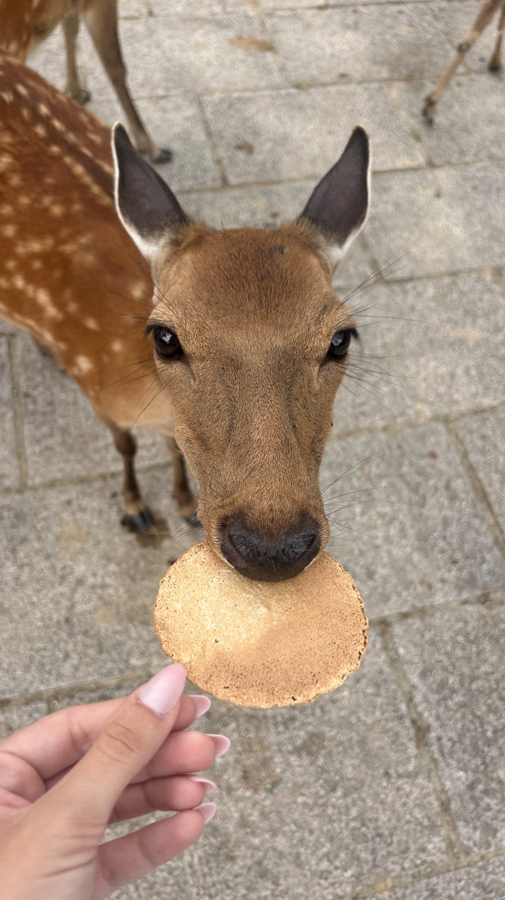

This image is interesting because it shows a different aspect of daily life in the military: an active and happy vibe compared to a strict and rigid one. It was taken during my welcome party to the unit, and since I am planning to share my military service, this photo represents the beginning of my experience. As a person born in South Korea and moved to Canada when I was 12, nationality has been a serious internal issue because I was not welcomed in either country. Therefore, I was scared, genuinely scared. However, when I arrived, everyone welcomed me and held a welcome party. That triggered me to question the value of nationality, which is a big step.
Victoria's Image

Credit to Victoria, 2022
The picture shows a woman (or girl) feeding a deer a biscuit (or some sort of crackers). Without background information, I assume that the picture was taken in a zoo or a park because I see other deer in the background. The interesting part of the picture is its first-person perspective. Feeding an animal itself is an experience that most people have experienced (I assume). However, sharing the experience in the first-person perspective makes the image alive and realistic. The most obvious part of the picture is that the picture is that the picture was taken while feeding the deer. The mysterious part of the picture is where she took the photo because I cannot image a place where the deer are walking around freely.
The assigned article articulates the benefits of close readings. Specifically, Gonchar introduced ten different photos to initiate the close reading activities and how to guide the activities. I remember having such activities in high school, especially during history class, where we had to close reading on political cartoons or historical artifacts. Even though I did not enjoy activities at the time, through the article, I earned some benefits from them. For example, having such activities regularly allowed me to capture details, expand my knowledge, and build arguments based on the observations.
During my exploration of Awwwards.com, I encountered a website called Zentry. The website immediately grabbed my attention because it welcomed me with a little animation and iconic bold typography. As I scrolled down, I observed the change of color in the background and the live feedback in the graphics. For example, a graphic got enlarged as I scrolled down, a set of visuals and text appeared out of nowhere, an active animation (a square figure constantly rotates), and cards appeared through inside-out flip animation. In addition, I was mesmerized by their typefaces (particularly for the headers) because it has such a strong character yet maintain high legibility. Also, they played colors and sizes with their typefaces as if it were a separate visual graphic.
Overall, the website introduced me to various interactions and color schemes that I can incorporate for future projects. Also, it was surprising that I enjoyed close reading unlike when I was in high school.
The article I read is "Overuse of Overlays" by the Nielson Norman Group because I wanted to know more about overlay as a design element and "correct" practices of the design element. This article would be valuable to the MadLibs project since I am new to overlay and I plan to incorporate an overlay element for my MadLib project.
One important practice when using an overlay is applying the correct visibility on the background. Normally, an overlay would decrease the visibility on the background to ensure the user focuses on the overlay. However, some overlays incorporate higher visibility in the background to ensure the users have the context in mind. Therefore, I have to understand what my users want to do before applying an overlay.
Another important practice that I learned when applying an overlay is the control of the overlay. Throughout the reading, the author constantly mentioned that it is important to allow users to leave the overlay in various ways because after all, an overlay is a pop-up that disturbs the workflow. Without a designated exit/cancel button (escape or back also works), an overlay fails as a design element. Thus, I have to add a dedicated 'go back' button on the overlay.
In conclusion, I earned a deeper understanding of the overlays and how to correctly apply the design choice in my MadLib project.
The assigned article discusses 20 best practices that increase the usability of an online form. This article was a pleasure to read because the author revealed all the design choices users normally perceive as ‘natural.’ Normally, users, including myself, treat online forms as a tedious process that needs to be done as quickly as possible. Hence, it is common to accept all the design choices on the form as characteristics of online forms ‘should’ have.
However, from the article, I learned a lesson that a designer should always remember: what we perceive as “normal” are the collections of the UX design thinking processes. For example, forms position a label on the top-left of the input field because such design choices make the users read the label and input field simultaneously, resulting in lowering the number of eye fixations and fastening the completion time. In addition, the explanation of collecting sensitive information is also a design choice that keeps the users from completing the form because without an explanation, collecting such information can disturb the users enough to abandon the form.
To conclude, the article itself was simple: 20 practices that should be done when forming an online form. However, it taught me more than just design practices: it helped me to understand the design choices on everyday objects like online forms.
Out of the numerous websites that I experienced, the account setup for Steam was the website that exemplifies the best practices because it maintained a single-column format, minimal input fields, and top-left label placement.